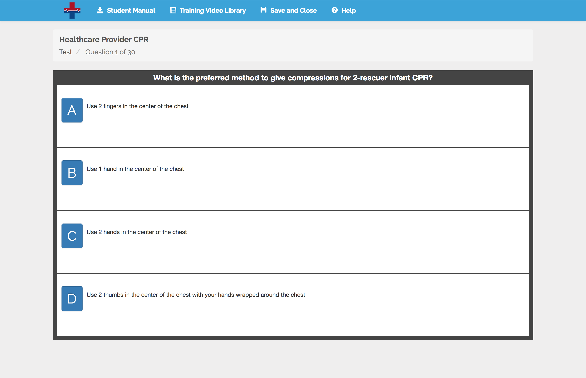

Adaptive Testing
- Overhauled our testing system so that every question is tied to a video from the course.
- After completing a failed test, remediation is shown, which lists all videos that had questions answered incorrectly along with the corresponding question(s).
- Each video belongs to a video category, which has requirements for number of questions that must be asked as well as number that must be answered correctly.
- Tests have both an overall pass percentage as well as requiring that all video category conditions must be met. Therefore, if a student continues to get questions wrong in a certain category, he/she will be asked more until the requirement is fulfilled or passing is impossible.
- Questions are chosen randomly from the pool of possible questions.
- There are a small number of bonus questions that may be asked if a person is within a couple of questions of passing after the minimum number of required questions has been asked (assuming that by answering them correctly, they would achieve the overall pass percent as well as the per-category requirements).
